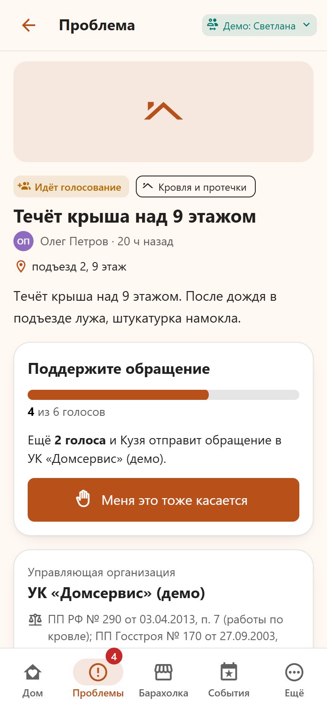
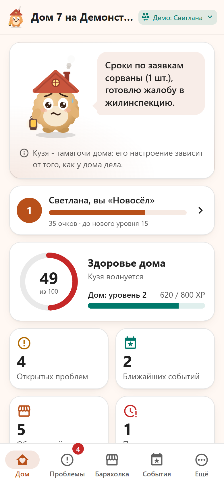
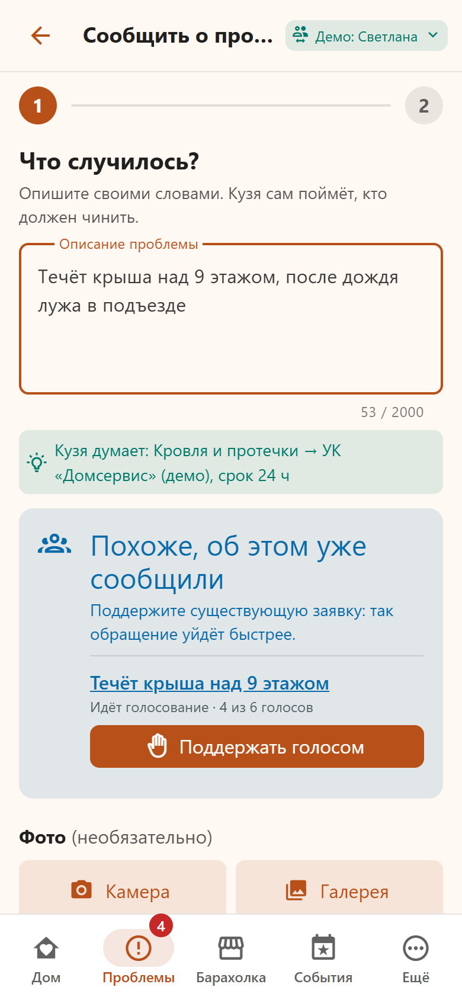
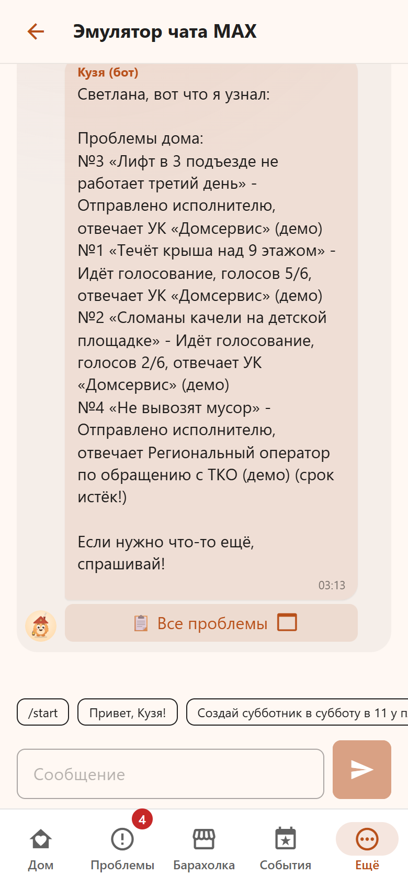
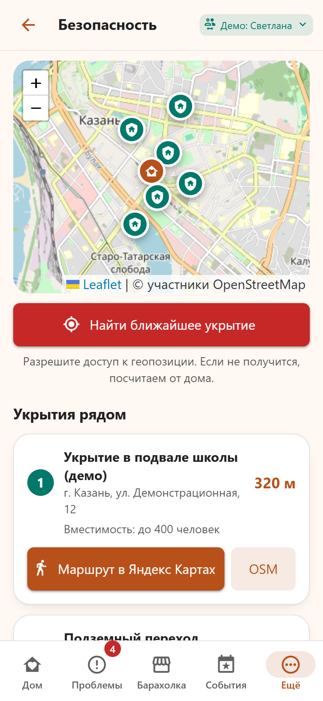
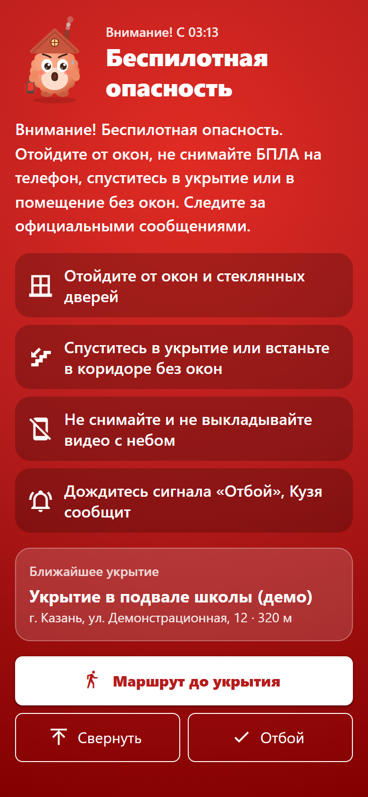

| Бот в MAX | TODO: https://max.ru/<ник бота> (ник фиксируется после выдачи токена) |
| Мини-приложение | кнопка в чате бота и диплинк https://max.ru/<ник>?startapp=home |
| Репозиторий и commit hash | TODO: ссылка на репозиторий, hash фиксируется при сдаче |
| Собственный API | не требуется для проверки; внутренний REST описан в docs/openapi.json |
| Тестовые учётные записи | в MAX: ваш аккаунт (добавьте бота в групповой чат администратором); без MAX: демо-жители 1001-1008 в переключателе мини-приложения, 1001 администратор |
| Переменные окружения | MAX_BOT_TOKEN передаётся отдельно; остальное в .env.example, работает без изменений |
| Запуск | docker compose up -d --build → http://localhost:8080 (мини-приложение), http://localhost:8080/dev/chat (эмулятор чата) |
| Основной сценарий | «Проблемы» → «Сообщить» → фото и описание → голоса соседей → при пороге Кузя отправляет обращение → статус и срок в карточке |
Хранитель дома в чате MAX: превращает жалобы соседей в коллективные обращения с правильным адресатом и сроком и следит, чтобы проблему решили.
Команда: TODO (состав и роли)
Жители МКД на 40-150 квартир с домовым чатом, прежде всего председатель совета дома и активные соседи.
Обсуждение поломки в чате не превращается в заявку: неизвестно, кто отвечает, какой срок положен и подал ли уже кто-то.
Фото → ИИ находит ответственного и норматив → соседи голосуют кнопкой → Кузя отправляет обращение и контролирует срок.
С 01.09.2026 УК обязаны работать с жителями через MAX (ПП РФ № 40). Кузя живёт там, где жители уже общаются.
Обращение за часы вместо недель, ноль ручных звонков у инициатора, дубли объединяются, просрочки эскалируются в ГЖИ.
Работающий MVP: бот, мини-приложение, агент, модерация, события, барахолка, укрытия. Запуск одной командой.
«Председатель совета дома в ситуации протечки кровли хочет, чтобы УК устранила её в срок, но сталкивается с разрозненными жалобами в чате и не знает, кто отвечает и какой срок положен, из-за чего проблема висит неделями».
| Факты | Источник |
|---|---|
| Жилфонд РФ около 4,2 млрд м² | Росстат, 2024 |
| С 01.09.2026 УК принимают обращения через MAX | ПП РФ № 40 от 26.01.2026 |
| Протечка кровли и лифт: устранение за 1 сутки | ПП Госстроя № 170 |
| Ответственность делят УК, регоператор ТКО, администрация, аварийные службы | ЖК РФ, ПП № 491, 131-ФЗ |
Проверка: опрос 30+ жителей, сравнение числа жалоб в чате и заявок в УК за 4 недели до запуска.
| Шаг | Сейчас | С Кузей |
|---|---|---|
| Заметил | «у нас течёт» и 20 ответов «у нас тоже» | фото + описание, дубль найден автоматически |
| Кому писать | ищет в интернете, путает УК и регоператора | ответственный из справочника виден сразу |
| Оформление | один активист пишет заявление | соседи голосуют кнопкой, обращение собирается само |
| Основание и срок | неизвестны | в обращении со ссылкой на норматив |
| Контроль | никто не помнит, когда подавали | таймер в карточке, жалоба в ГЖИ при просрочке |
исчезает поиск ответственного, ручное заявление, звонки «подавали ли уже» автоматизируется адресация, текст, контроль срока, эскалация


Настроение маскота считается из данных: просрочки огорчают, решённые проблемы и субботники радуют. Состояние дома понятно без отчётов.
LLM только выбирает категорию. Адресат, основание и срок из справочника со ссылками на ПП № 290, 354, 491, Госстрой № 170.
Порог голосов от размера чата, дубли через RAG, автообращение, контроль срока, эскалация в ГЖИ. Газ уходит в аварийку сразу, без голосования.
«Кузя, создай субботник в субботу в 11». Анонс в чате, кнопка «Иду», живой чат события, напоминание записавшимся.
Отдать коляску даром или продать шкаф соседу. Кузя передаёт сообщение продавцу в личку.
Очки за заявки, голоса, субботники и подарки соседям. Рейтинг соседей и уровень дома.
Карта укрытий на OpenStreetMap, маршрут в Яндекс Картах, полноэкранное оповещение о беспилотной опасности.
Мат, оскорбления, реклама и спам удаляются. Три предупреждения → сообщение администраторам.
Понимает, кто пишет, помнит контекст чата, берёт данные о доме из MCP «Жилищный навигатор».
Эти функции дают регулярный повод заходить, поэтому в момент поломки канал уже установлен и соседи голосуют.




Если помочь жителям превращать жалобы из чата в коллективные обращения с правильным адресатом и сроком через голосование в MAX, доля устранённых в срок проблем вырастет: УК получает одно оформленное обращение с фото и основанием, а жители видят срок и могут эскалировать.
| Метрика | Как считаем | Цель (гипотеза) |
|---|---|---|
| Время до обращения в УК | sent_at − created_at | медиана < 24 ч |
| Устранено в нормативный срок | resolved_at ≤ deadline_at | +30% к базовой линии |
| Объединённые дубли | «поддержать существующую» вместо новой | > 50% похожих жалоб |
| Вовлечённость | доля участников чата с голосом за месяц | > 25% |
| Ручные действия инициатора | звонки и письма в УК на одну проблему | с 5-10 до 0-1 |
Модульный монолит: один пакет, четыре процесса из одного образа, связь через RabbitMQ. REST + SSE вместо gRPC/GraphQL: мини-приложение живёт в WebView, так быстрее и проще отлаживать.
| Интеграция | Статус в MVP | Для внедрения |
|---|---|---|
| MAX Bot API и MAX Bridge | реальная подпись initData проверяется на сервере | токен бота, HTTPS-адрес мини-приложения |
| Справочник ответственных и нормативов | реальные нормы справочно | подтверждение юристом УК, региональные нормы |
| Отправка обращения в УК | модельная текст в карточке | e-mail диспетчерской или ГИС ЖКХ |
| Паспорт дома, тарифы, капремонт | модельные данные в MCP | ГИС ЖКХ, региональный фонд капремонта |
| Укрытия | демо-точки | реестр МЧС или муниципалитета |
| Оповещение о БПЛА | запуск администратором | региональная система оповещения |
| LLM | Ollama Cloud или stub без сети | выбор модели, при необходимости локальная Ollama |
Персональные данные по минимуму: имя из MAX и номер квартиры по желанию. Фото без EXIF, переписка чата не хранится, только срабатывания модерации.
Дом на 40-150 квартир, УК, готовая принимать обращения по e-mail или в MAX, председатель совета дома как амбассадор.
Кузю добавляют в существующий домовой чат. УК указывает канал приёма, юрист подтверждает сроки. Жителям ничего не нужно устанавливать.
Закреп Кузи в чате, QR-код в подъезде на диплинк мини-приложения, первый субботник через Кузю.
Базовая линия: 4 недели истории чата до запуска. После успеха: все дома этой УК и кабинет диспетчера для смены статусов прямо в MAX.
Дом → все дома УК (один справочник и канал) → УК Казани через ассоциацию ТСЖ/УК → регионы с новым справочником норм. Также ТСЖ, ЖСК, коттеджные посёлки, общежития.
| Риск | Что делаем |
|---|---|
| УК игнорирует обращения из бота | основание и срок в обращении, жалоба в ГЖИ при просрочке, договорённость с УК до пилота |
| Ошибка категории у LLM | правовая часть из справочника, газ определяется правилами, житель видит категорию до отправки |
| Накрутка голосов | один голос на жителя, порог от размера чата, блокировка строки при подсчёте |
| Спам и токсичность | двухслойная модерация, журнал срабатываний, уведомление администраторов |
| Недоступна LLM | stub и правила: основной сценарий работает без LLM |
Ограничения MVP: отправка обращения и данные ГИС ЖКХ модельные, укрытия демонстрационные, long polling вместо webhook. Подробно в README.